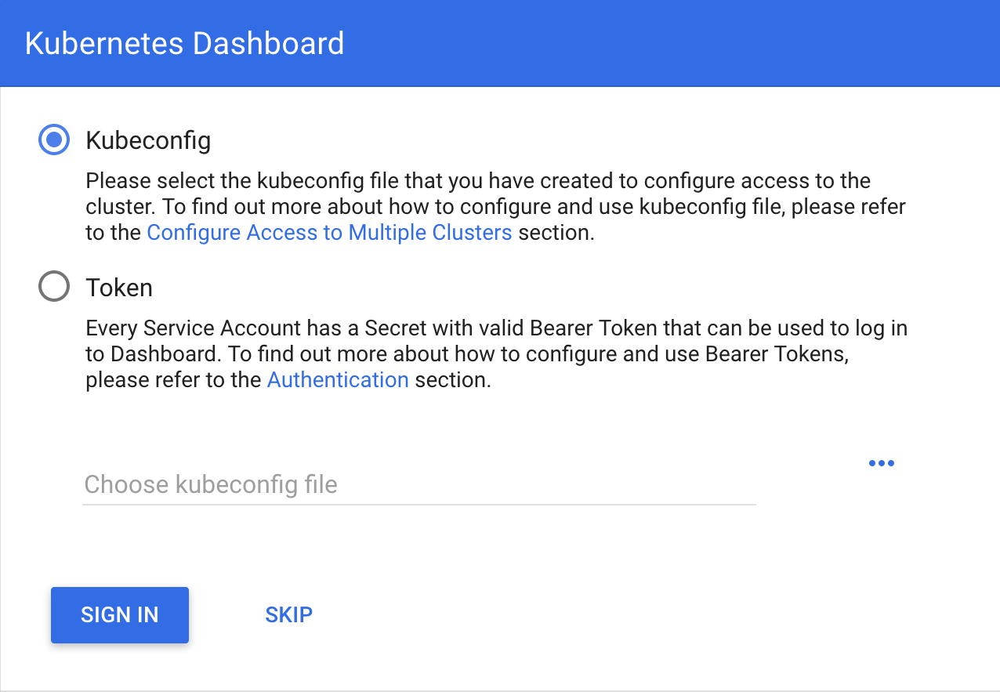
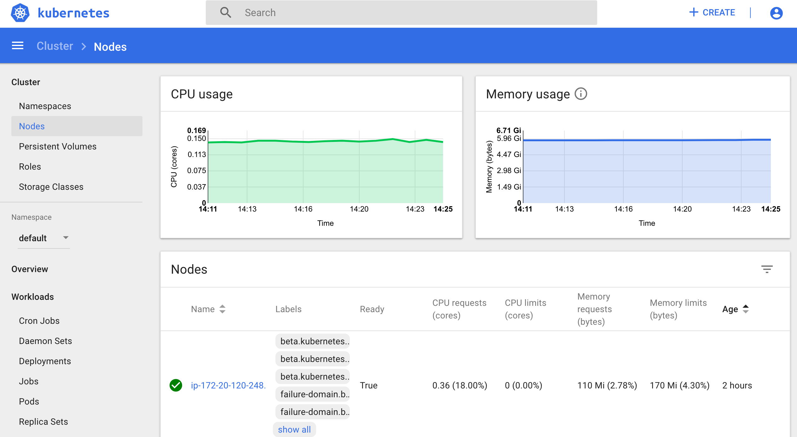

{kind=link}
Kubernetes¶
Kubernetes is an open-source system for automating deployment, scaling, and management of containerized applications (see Kubernetes and Kubernetes github page ).
Cluster creation¶
The nex steps follow kops and kops - Kubernetes Operations guides (another guide: Step Zero Kubernetes on AWS).
Configure a domain and a subdomain with their respective hosted zones. For the following description Route 53 service of AWS was used to create domain
conabio-route53.netand subdomainantares3.conabio-route53.net. Also a gossip based Kubernetes cluster can be used instead (see for example this issue ).Install same versions of kops and kubectl. You can use a
t2.microec2 instance with AMIUbuntu 18.04 LTSand a role attached to it withAmazonEc2FullAccessto install this tools and label it with the next bash script:
Note: change region in next bash script where you deployed t2.micro instance
#!/bin/bash
##variables:
region=<region>
name_instance=conabio-kubernetes
shared_volume=/shared_volume
user=ubuntu
##System update
export DEBIAN_FRONTEND=noninteractive
apt-get update -yq
##Install awscli
apt-get install -y python3-pip && pip3 install --upgrade pip
pip3 install awscli --upgrade
##Tag instance
INSTANCE_ID=$(curl -s http://instance-data/latest/meta-data/instance-id)
PUBLIC_IP=$(curl -s http://instance-data/latest/meta-data/public-ipv4)
aws ec2 create-tags --resources $INSTANCE_ID --tag Key=Name,Value=$name_instance-$PUBLIC_IP --region=$region
##Set variables for completion of bash commands
echo "export LC_ALL=C.UTF-8" >> /home/$user/.profile
echo "export LANG=C.UTF-8" >> /home/$user/.profile
##Set variable mount_point
echo "export mount_point=$shared_volume" >> /home/$user/.profile
##Useful software for common operations
apt-get install -y nfs-common jq git htop nano
##Create shared volume
mkdir $shared_volume
##install docker for ubuntu:
apt-get install -y apt-transport-https ca-certificates curl software-properties-common
curl -fsSL https://download.docker.com/linux/ubuntu/gpg | sudo apt-key add -
add-apt-repository "deb [arch=amd64] https://download.docker.com/linux/ubuntu $(lsb_release -cs) stable"
apt-get update -yq
apt-get install -y docker-ce
service docker start
##install kops version 1.14.0:
wget -O kops https://github.com/kubernetes/kops/releases/download/1.14.0/kops-linux-amd64
chmod +x ./kops
sudo mv ./kops /usr/local/bin/
##install kubernetes command line tool v1.14: kubectl
wget -O kubectl https://storage.googleapis.com/kubernetes-release/release/v1.14.0/bin/linux/amd64/kubectl
chmod +x ./kubectl
sudo mv ./kubectl /usr/local/bin/kubectl
##enable completion for kubectl:
echo "source <(kubectl completion bash)" >> /home/$user/.bashrc
You can check kops and kubectl versions with:
$kops version
$kubectl version
Note
All kubectl and kops commands must be executed in this instance.
Set next bash variables:
#Your domain name that is hosted in AWS Route 53
#Use: export DOMAIN_NAME="antares3.k8s.local" #for a gossip based cluster
export DOMAIN_NAME="antares3.conabio-route53.net"
# Friendly name to use as an alias for your cluster
export CLUSTER_ALIAS="k8s-deployment"
# Leave as-is: Full DNS name of you cluster
export CLUSTER_FULL_NAME="${CLUSTER_ALIAS}.${DOMAIN_NAME}"
# AWS availability zone where the cluster will be created
export CLUSTER_AWS_AZ=us-west-2a,us-west-2b,us-west-2c
# Leave as-is: AWS Route 53 hosted zone ID for your domain (don't set it if gossip based cluster is used)
export DOMAIN_NAME_ZONE_ID=$(aws route53 list-hosted-zones \
| jq -r '.HostedZones[] | select(.Name=="'${DOMAIN_NAME}'.") | .Id' \
| sed 's/\/hostedzone\///')
export KUBERNETES_VERSION="1.14.0"
#To hold cluster state information export KOPS_STATE_STORE
export KOPS_STATE_STORE="s3://${CLUSTER_FULL_NAME}-state"
export EDITOR=nano
Create AWS S3 bucket to hold information for Kubernetes cluster:
Note
The instance needs the policy AmazonS3FullAccess attach to a role created by you to have permissions to execute next command.
#Bucket will be created in us-east (N. Virginia)
$aws s3api create-bucket --bucket ${CLUSTER_FULL_NAME}-state
Create group and user kops and generate access keys for user kops:
Note
The instance needs the policy IAMFullAccess attach to a role created by you to have permissions to execute next command.
Create group and permissions of it:
$name=kops
$aws iam create-group --group-name $name
$aws iam attach-group-policy --policy-arn arn:aws:iam::aws:policy/AmazonEC2FullAccess --group-name $name
$aws iam attach-group-policy --policy-arn arn:aws:iam::aws:policy/AmazonRoute53FullAccess --group-name $name
$aws iam attach-group-policy --policy-arn arn:aws:iam::aws:policy/AmazonS3FullAccess --group-name $name
$aws iam attach-group-policy --policy-arn arn:aws:iam::aws:policy/IAMFullAccess --group-name $name
$aws iam attach-group-policy --policy-arn arn:aws:iam::aws:policy/AmazonVPCFullAccess --group-name $name
$aws iam attach-group-policy --policy-arn arn:aws:iam::aws:policy/AmazonElasticFileSystemFullAccess --group-name $name
Create user kops and add it to already created group kops:
$aws iam create-user --user-name $name
$aws iam add-user-to-group --user-name $name --group-name $name
Create access keys for user kops:
$aws iam create-access-key --user-name $name
This will generate an AccessKeyId and SecretAccessKey that must be kept in a safe place. Use them to configure awscli and set next variables:
$aws configure
AWS Access Key ID [None]: xxxx
AWS Secret Access Key [None]: xxxxxxx
Default region name [None]: <leave it empty>
Default output format [None]: <leave it empty>
$export AWS_ACCESS_KEY_ID=$(aws configure get aws_access_key_id)
$export AWS_SECRET_ACCESS_KEY=$(aws configure get aws_secret_access_key)
Create a Key Pair with AWS console and a Public Key. See Amazon EC2 Key Pairs sections: Creating a Key Pair Using Amazon EC2 and Creating a Key Pair Using Amazon EC2. Save the Public Key in
/home/ubuntu/.ssh/id_rsa.pub.Deploy Kubernetes Cluster. An example is:
$kops create cluster \
--name=${CLUSTER_FULL_NAME} \
--zones=${CLUSTER_AWS_AZ} \
--master-size="t2.medium" \
--node-size="t2.medium" \
--node-count="1" \
--dns-zone=${DOMAIN_NAME} \
--ssh-public-key="/home/ubuntu/.ssh/id_rsa.pub" \
--kubernetes-version=${KUBERNETES_VERSION}
$kops update cluster --name ${CLUSTER_FULL_NAME} --yes
Note
Check status of cluster with kops validate cluster and wait until it says Your cluster $CLUSTER_FULL_NAME is ready
Note
You can delete cluster with: $kops delete cluster ${CLUSTER_FULL_NAME} and then $kops delete cluster ${CLUSTER_FULL_NAME} --yes (without yes flag you only see what changes are going to be applied) and don’t forget to delete S3 bucket: $aws s3api delete-bucket --bucket ${CLUSTER_FULL_NAME}-state after cluster deletion.
Note
You can scale up/down nodes of cluster with command: $kops edit ig nodes --name $CLUSTER_FULL_NAME, edit screen that appears and set 3/0 number of instances in minSize, maxSize values (3 is an example) and then $kops update cluster $CLUSTER_FULL_NAME and $kops update cluster $CLUSTER_FULL_NAME --yes to apply changes. Command kops validate cluster is useful to see state of cluster.
Note
To scale up/down master you can use: $kops edit ig master-us-west-2a --name $CLUSTER_FULL_NAME (you can check your instance type of master with: $kops get instancegroups) set 1/0 number of instances in minSize, maxSize values and then $kops update cluster $CLUSTER_FULL_NAME and $kops update cluster $CLUSTER_FULL_NAME --yes to apply changes. Command kops validate cluster is useful to see state of cluster.
¿How do I ssh to an instance of Kubernetes Cluster?
Using the key-pem already created for the kops user execute:
$ssh -i <key>.pem admin@api.$CLUSTER_FULL_NAME
Note
Make sure this <key>.pem has 400 permissions: $chmod 400 <key>.pem.
You can also deploy kubernetes dashboard for your cluster.
Kubernetes dashboard¶
According to Kubernetes Dashboard kubernetes dashboard is a general purpose, web-based UI for kubernetes clusters. It allows users to manage applications running in the cluster and troubleshoot them, as well as manage the cluster itself.
Next steps are based on: Certificate management, Installation, Accessing Dashboard 1.7.X and above and Creating sample user from kubernetes official documentation and installation of Certbot for Ubuntu (18.04) bionic and certbot-dns-route53 to generate certificates and access kubernetes dashboard via https.
Install certbot and Route53 plugin for Let’s Encrypt client:
$sudo apt-get update
$sudo apt-get install -y software-properties-common
$sudo add-apt-repository universe
$sudo add-apt-repository ppa:certbot/certbot
$sudo apt-get update
$sudo apt-get install -y certbot
#check version of certbot and install route53 plugin:
certbot_v=$(certbot --version|cut -d' ' -f2)
$sudo pip3 install certbot_dns_route53==$certbot_v
Create some useful directories:
$mkdir -p ~/letsencrypt/log/
$mkdir -p ~/letsencrypt/config/
$mkdir -p ~/letsencrypt/work/
Using kubectl retrieve where is kubernetes master running:
$ kubectl cluster-info
Kubernetes master is running at <location>
KubeDNS is running at <location>/api/v1/namespaces/kube-system/services/kube-dns:dns/proxy
To further debug and diagnose cluster problems, use 'kubectl cluster-info dump'.
Generate certificate for the <location> (remove https if it’s the case, just the dns name) of last command (make sure to save directory letsencrypt in a safe place):
$certbot certonly -d <location> --dns-route53 --logs-dir letsencrypt/log/ --config-dir letsencrypt/config/ --work-dir letsencrypt/work/ -m myemail@myinstitution --agree-tos --non-interactive --dns-route53-propagation-seconds 20
Note
Make sure you save the date that will expire your certificate. To renew certificate execute:
$certbot renew --dns-route53 --logs-dir letsencrypt/log/ \
--config-dir letsencrypt/config/ --work-dir letsencrypt/work/ \
--non-interactive
Note
Also you need to have some symlinks created under directory: letsencrypt/config/live/<location>:
cert.pem -> ../../archive/<location>/cert1.pem
chain.pem -> ../../archive/<location>/chain1.pem
fullchain.pem -> ../../archive/<location>/fullchain1.pem
privkey.pem -> ../../archive/<location>/privkey1.pem
Create directory certs and copy cert and private key:
$mkdir certs
$cp letsencrypt/config/archive/<location>/fullchain1.pem certs/
$cp letsencrypt/config/archive/<location>/privkey1.pem certs/
Note
When renewing your certificate the latest ones will be symlinks located: letsencrypt/config/live/<location>/. See Where are my certificates?
Retrieve yaml to deploy kubernetes dashboard and change some values:
$curl -O https://raw.githubusercontent.com/kubernetes/dashboard/v2.0.0-rc5/aio/deploy/recommended.yaml
$sed -ni 's/- --auto-generate-certificates/#- --auto-generate-certificates/;p' recommended.yaml
$sed -i '/args:/a \ \ \ \ \ \ \ \ \ \ \ \ - --tls-cert-file=fullchain1.pem' recommended.yaml
$sed -i '/args:/a \ \ \ \ \ \ \ \ \ \ \ \ - --tls-key-file=privkey1.pem' recommended.yaml
Create deployments and services with kubernetes-dashboard.yaml :
$kubectl apply -f recommended.yaml
Delete certs and recreate secrets using the .pem that we created with certbot:
$kubectl delete secret kubernetes-dashboard-certs -n kubernetes-dashboard
$kubectl create secret generic kubernetes-dashboard-certs --from-file=certs -n kubernetes-dashboard
You can check that containers are running by executing:
$kubectl -n kubernetes-dashboard get pods
To visualize kubernetes-dashboard one possibility is to change type ClusterIP to NodePort (see Accessing Dashboard 1.7.X and above) when executing next command:
$kubectl edit service kubernetes-dashboard -n kubernetes-dashboard
and get port with:
$kubectl get service kubernetes-dashboard -n kubernetes-dashboard
Open port retrieved by last command in masters security group of kubernetes cluster with aws console. In your browser type:
https://<location>:<port>
Documentation of Creating sample user can be used to access via token generation. Use:
kubectl -n kubernetes-dashboard describe secret $(kubectl -n kubernetes-dashboard get secret | grep admin-user | awk '{print $1}')
to retrieve token.
 {kind=link}
{kind=link}
To scale down components of kubernetes dashboard:
$kubectl -n kubernetes-dashboard scale deployments/dashboard-metrics-scraper --replicas=0
$kubectl -n kubernetes-dashboard scale deployments/kubernetes-dashboard --replicas=0
To scale up components of kubernetes dashboard:
$kubectl -n kubernetes-dashboard scale deployments/dashboard-metrics-scraper --replicas=1
$kubectl -n kubernetes-dashboard scale deployments/kubernetes-dashboard --replicas=1
To delete components of kubernetes dashboard:
#delete admin-user created:
$kubectl -n kubernetes-dashboard delete serviceaccount admin-user
$kubectl -n kubernetes-dashboard delete ClusterRoleBinding admin-user
#delete dashboard components:
$kubectl delete deployment kubernetes-metrics-scraper -n kubernetes-dashboard
$kubectl delete deployment kubernetes-dashboard -n kubernetes-dashboard
$kubectl delete service dashboard-metrics-scraper -n kubernetes-dashboard
$kubectl delete clusterrolebinding kubernetes-dashboard -n kubernetes-dashboard
$kubectl delete rolebinding kubernetes-dashboard -n kubernetes-dashboard
$kubectl delete clusterrole kubernetes-dashboard -n kubernetes-dashboard
$kubectl delete role kubernetes-dashboard -n kubernetes-dashboard
$kubectl delete configmap kubernetes-dashboard-settings -n kubernetes-dashboard
$kubectl delete secret kubernetes-dashboard-key-holder -n kubernetes-dashboard
$kubectl delete secret kubernetes-dashboard-csrf -n kubernetes-dashboard
$kubectl delete service kubernetes-dashboard -n kubernetes-dashboard
$kubectl delete serviceaccount kubernetes-dashboard -n kubernetes-dashboard
$kubectl delete secret kubernetes-dashboard-certs -n kubernetes-dashboard
$kubectl delete namespace kubernetes-dashboard -n kubernetes-dashboard